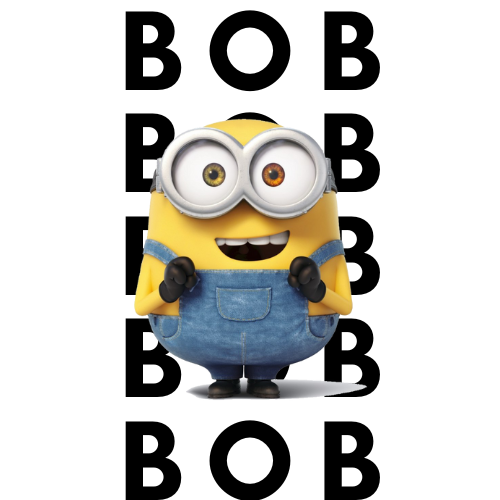

Bob the Minion:

Bob is a short and bald Minion with heterochromia, often seen carrying a teddy bear named Tim. He has multi-colored eyes (green and brown) and is known for his childlike and immature nature, finding love in everything, including a rat he named Poochi. Bob is described as a "Little Brother" who enjoys bedtime stories and playing with his favorite stuffed teddy bear, Tim. Additionally, Bob is the only minion shown to be heterochromic and bald, and he was formerly known as King Bob.